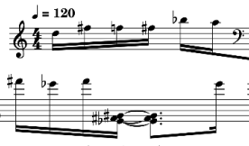

Projects
C Ray Tracer
An experiment to see how difficult it would be to write a ray tracer in the C language.
The results: it's surprisingly easy!
- see more -
AI Music Generation

A team project stemming from MAIC: generating music with AI.
A paper was published with the details.
- see more -
Procedural Brainf**k Compiler
 Started as an attempt to write a compiler.
Started as an attempt to write a compiler.
Once the initial compiler was working, I added a custom feature to the language.
- see more -